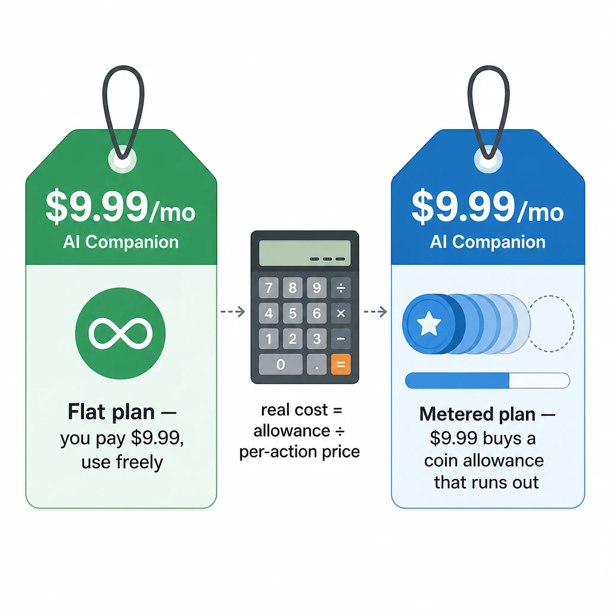
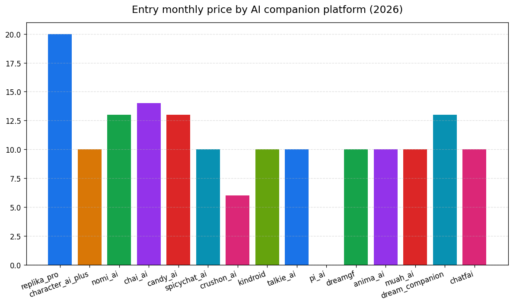
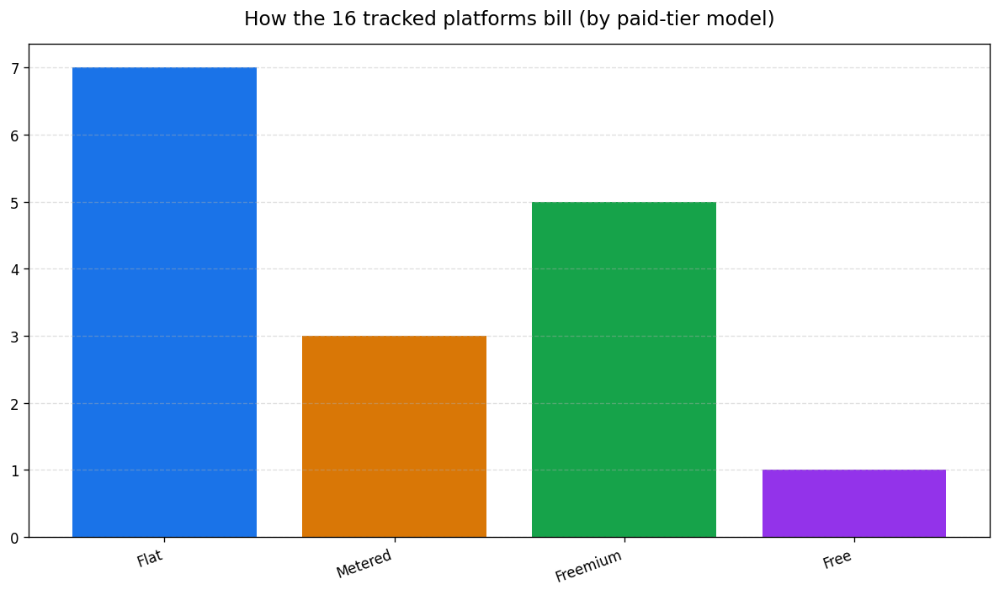
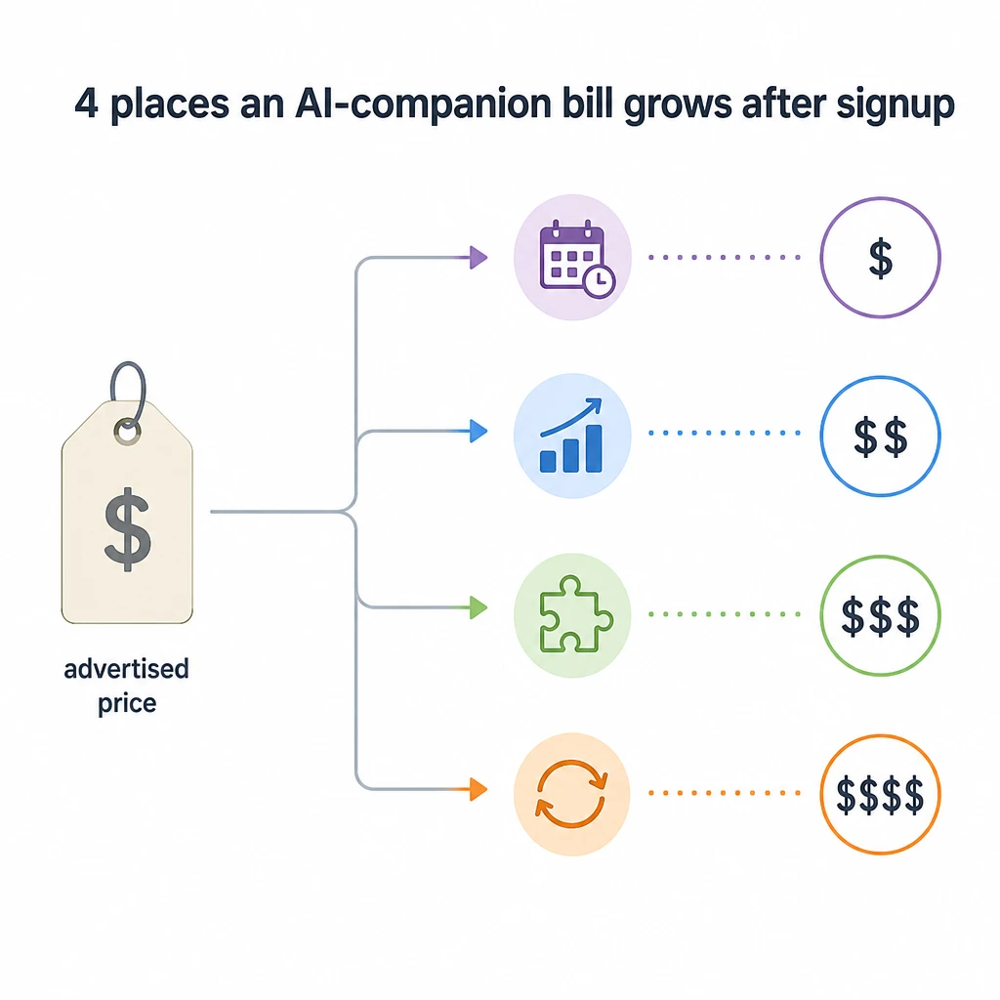
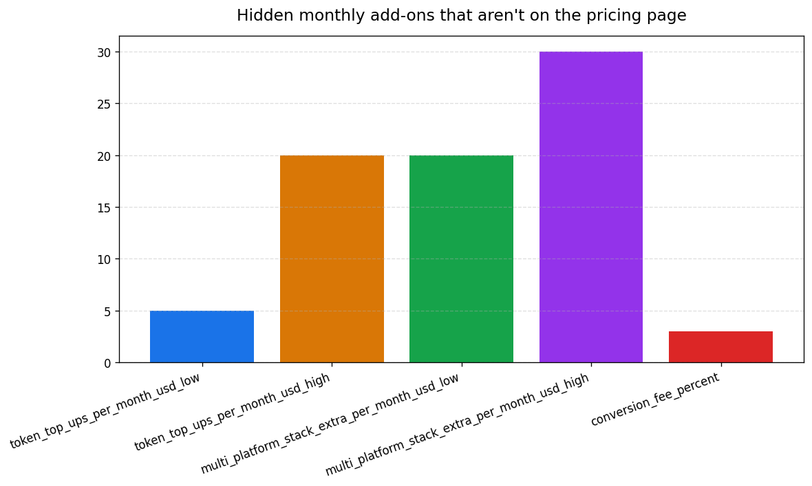
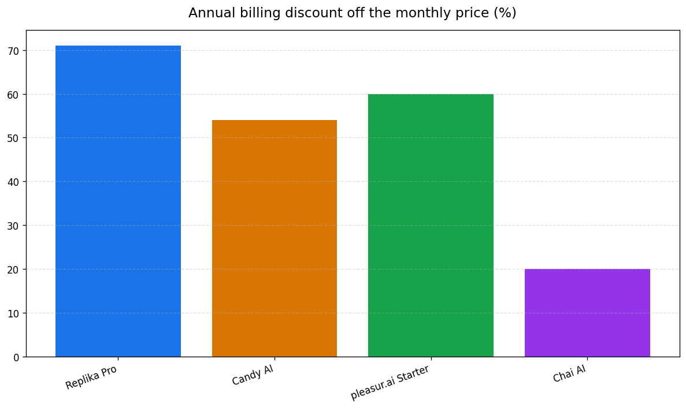

AI Companion Pricing Guide 2026: What Each Platform Actually Costs You
A typical AI companion costs about $10–20 a month at the entry tier in 2026 — the most common sticker price is $9.99 — and roughly $5–8 a month if you pay for a year up front. But that sticker price barely tells you what you'll actually pay. Half the platforms in this space meter every image, voice note, and call, so two apps both labeled "$9.99" can cost wildly different amounts depending on how you use them.
That gap is the whole story of pricing in this category, and it's the part every comparison guide skips. The hero price is a bait number. What you really pay depends on the billing model — whether a platform charges one flat fee and lets you use the features, or sells you a bucket of credits that drains as you generate media.
The platforms you can budget are the ones that put both numbers on the table: how big the bucket is, and what each action costs to draw from it. Once those are visible, working out your real monthly cost on a coin-metered platform is simple arithmetic you can run before you ever enter a card.
This guide gives you a 16-platform price table with the one column other guides leave out — the billing model — plus per-platform breakdowns, the hidden costs that aren't on any pricing page, and the math for working out what a metered plan will cost you.

What an AI Companion Actually Costs in 2026
Entry-tier AI companions cluster between $9.99 and $12.99 a month, drop to roughly $5–8 a month on annual billing, and stretch from completely free (Pi AI, $0) up to Replika Pro at $19.99 at the top of the mainstream range (as of March 2026, per aicompanionguides.com pricing guide). Those numbers describe the advertised price. They don't describe your bill.
The most common monthly price is $9.99 — Character.AI, SpicyChat, Kindroid, DreamGF, and several others all land there. Across the 15 platforms a recent independent review tracked, the average entry price works out to about $12–13 a month (as of March 2026, per aicompanionguides.com pricing guide). pleasur.ai's entry tier sits inside that band at $12.99 a month for the Starter plan (per pleasur.ai/pricing).
The single biggest lever on price isn't which app you pick — it's how you pay for it. Annual plans cut the effective monthly cost by 40–60% across almost every platform that offers them (as of March 2026, per aicompanionguides.com pricing guide). Candy AI drops from $12.99 to $5.99 a month on a yearly plan (per aicompanionguides.com pricing guide, Mar 2026); pleasur.ai's Starter falls from $12.99 to $5.20 (per pleasur.ai/pricing). Most price comparisons quote the monthly figure and stop there, which overstates the real cost by roughly half for anyone who sticks around.
Free tiers exist nearly everywhere, but "free" means three different things. It can be a hard message cap (a fixed number of replies a day, then you're locked out). It can be a feature-locked demo built to push you toward paying. Or it can be genuinely free and usable, the way Pi AI is — fully free, no premium tier at all.
So the spread you see across this category isn't really about price. A $9.99 app and a $12.99 app are closer than they look; the gap that actually matters is the billing model sitting behind the sticker. That's what the next section makes visible.

The Master Comparison Table: 16 Platforms, Side by Side
Here is every major AI companion platform's entry price in one place — with the column other guides omit (Model) and a Source column so you can check every figure yourself.
The Model column is the point. It tells you whether the entry price is the whole story (flat), a bucket that depletes as you use it (metered), or a teaser sitting above a free tier (freemium). Read the price next to the model, not on its own — two identical sticker prices can buy completely different things depending on which column they sit in.
Every competitor figure below is that platform's stated entry price as tracked by an independent review (as of March 2026, per aicompanionguides.com pricing guide). pleasur.ai's row comes from its live pricing page, and it appears honestly as what it is: coin-metered, with text unlimited and media priced in coins. Where a cell can't be sourced cleanly, it's marked rather than guessed.
| Platform | Model | Entry price (monthly) | Annual (per-mo) | What the entry tier includes | NSFW-friendly | Source |
|---|---|---|---|---|---|---|
| Replika Pro | Freemium + flat | $19.99 | $5.83 ($69.99/yr); $299.99 lifetime | Voice, AR, all relationship modes; only mainstream lifetime deal | Limited | aicompanionguides.com, Mar 2026 |
| Character.AI Plus | Freemium + flat | $9.99 | ~$6.67 ($79.99/yr) | Faster replies, priority access; generous free tier; no token system | No | aicompanionguides.com, Mar 2026 |
| Nomi AI | Freemium + flat | $12.99 | — (no annual) | Unlimited messaging, memory, image generation | Yes | aicompanionguides.com, Mar 2026 |
| Chai AI | Freemium + flat | $13.99 | $11.25 ($134.99/yr) | Ad-free, faster replies, higher limits | Partial | aicompanionguides.com, Mar 2026 |
| Candy AI | Freemium + flat | $12.99 | $5.99 ($71.88/yr) | NSFW chat + image generation; cheapest annual | Yes | aicompanionguides.com, Mar 2026 |
| SpicyChat AI | Freemium + flat | $9.99 | — | Higher message limits; generous free tier | Yes | aicompanionguides.com, Mar 2026 |
| CrushOn.ai | Freemium + metered | from $5.99 | varies by tier | Token system; 30 messages/day free | Yes | aicompanionguides.com, Mar 2026 |
| Kindroid | Flat (no free tier) | $9.99 | — | Full features, no free tier | Yes | aicompanionguides.com, Mar 2026 |
| Talkie AI | Freemium | ~$9.99 | — | Premium chat and higher limits | Partial | aicompanionguides.com, Mar 2026 |
| Pi AI | 100% free | $0 | — | Full assistant chat; no premium tier | No | aicompanionguides.com, Mar 2026 |
| DreamGF | Metered (no free tier) | from $9.99 | varies by tier | Token top-ups for images and messages | Yes | aicompanionguides.com, Mar 2026 |
| Anima AI | Freemium | ~$9.99 | — | Premium chat, roleplay | Partial | aicompanionguides.com, Mar 2026 |
| Muah AI | Freemium + add-ons | from $9.99 | — | Premium plus paid add-ons inside premium | Yes | aicompanionguides.com, Mar 2026 |
| Dream Companion | Freemium | ~$12.99 | — | Premium chat and image generation; price shifted recently | Yes | aicompanionguides.com, Mar 2026 |
| ChatFAI | Freemium | ~$9.99 | — | Celebrity and fictional-character chat | Partial | aicompanionguides.com, Mar 2026 |
| pleasur.ai | Coin-metered (freemium) | $12.99 (Starter) | $5.20 ($62.40/yr) | Unlimited text; 1,500 coins/mo for media — images 10 coins, voice 10 coins, calls 50 coins/min | Yes (18+) | pleasur.ai/pricing, 2026 |
A few rows tell you most of what you need. Candy AI has the cheapest annual price of any NSFW-friendly platform at $5.99 a month; if you want to read more on that one specifically, our Candy AI safety review breaks it down. Pi AI is the only genuinely free option, but it won't do adult chat. And the two rows marked "metered" — CrushOn.ai and DreamGF — behave nothing like the flat rows next to them once you start generating media, even where the sticker price lines up.
The One Distinction Every Price Guide Skips: Flat vs Metered
A flat $9.99 and a metered $9.99 are not the same product. Flat means you pay once and use the features within fair-use limits. Metered means $9.99 buys a bucket of credits that empties as you generate images, voice notes, or calls — and when it's empty, you pay to refill it.
There are really three models, and it's worth pinning them down:
- Flat / subscription. One price, used freely within reasonable limits. Character.AI and Kindroid work this way — the entry price is also the ceiling.
- Metered / coin-credit. Your fee buys an allowance that depletes with each action. Run it down and you top up. DreamGF, CrushOn.ai, and pleasur.ai all meter.
- Freemium. A free tier with a paid upgrade sitting on top — and that upgrade is itself either flat or metered underneath, so freemium doesn't tell you what you'll pay once you're a paying user.
Across the 16 platforms in the master table, the split lands like this: most charge a flat paid fee, a handful are openly metered, and the rest only advertise a freemium tier without saying which mechanic sits underneath.

Here's why the model matters more than the price. On a metered plan, the advertised number is a floor, not a ceiling. Light users stay under it; heavy image, voice, or call use can multiply it. On a flat plan, the price is the price no matter how much you use.
But "metered" splits into two very different experiences, and this is the part that decides whether you can trust the number. Some metered platforms tell you the size of the allowance and the cost of each action, so you can do the math before you pay. Others sell you a vague pack of "tokens" that burns at a rate you only discover after the balance hits zero. No major platform in this space offers truly unlimited media — every one of them meters at some level, pleasur.ai included (as of March 2026, per aicompanionguides.com pricing guide). The honest difference between the two metered experiences isn't an absence of metering; it's whether the platform shows its math. pleasur.ai does, which is the only reason the worked example in the next section is possible at all.

How to Calculate Your Real Monthly Cost on a Metered Plan
On any metered platform that lists its allowance and its per-action prices, your real cost is simple arithmetic: allowance ÷ per-action cost = how many actions you actually get, and expected usage × per-action cost = what your month truly costs. You can run both before you pay a cent.
The method is two lines:
- Divide the monthly allowance by the price of the action you care about. That tells you how far the plan stretches.
- Multiply how many of that action you expect to use by its price. That tells you whether the plan covers your month or you'll be topping up.
It helps to run it on real published numbers. Take pleasur.ai's mid Standard tier, a sensible fit if you generate a fair amount of media: $27.99 a month (or $11.20 billed yearly) for 5,000 coins, with an AI image priced at 10 coins. Drop those into the formula and you get a number you can act on: 5,000 ÷ 10 = 500 AI images a month — about 5.6 cents an image — before you'd ever need to top up. That's your ceiling, in plain figures, and you knew it before paying a cent. No competitor in this guide lets you pin its real cost down that precisely, because none of them put both numbers on the page.
Text messages don't enter this math at all — they're unlimited on every tier and cost no coins, so chatting itself never drains your balance. Only media does. That changes how you read the allowance: 5,000 coins isn't "5,000 messages," it's 500 images, or fewer images and room to spare for other priced actions. Want 300 images? That's 3,000 coins, leaving 2,000 in the bucket. The platform also publishes a 50-coins-per-minute call price and a 10-coin voice-note price, so when those actions arrive the same division works — you'll be able to size them the same way.
The whole method hinges on one thing: the platform has to tell you both the allowance and the price of each action. On an opaque "token" platform it won't — you buy a pack that burns at a rate the platform never quite states, a message costs some tokens, an image costs more, and you learn the real exchange rate the moment your balance empties mid-conversation. You can't budget what you can't see. That, and only that, is the transparency line worth caring about: not whether a platform meters — they all do — but whether it lets you calculate the bill before you pay it.
If you want the full per-tier breakdown — what each plan's coins buy across every action, and how the annual discount changes the picture — we walk through the full coin-cost math separately so this guide can stay at the level of "here's the method." On pleasur.ai, images come from the on-platform image generator and chat happens in the Companion Creator; both draw from the same coin balance, which is why the math above is the same math whether you're generating or chatting.

Platform-by-Platform: What the Most-Searched Names Cost
Here's the entry price, billing model, and what's actually included for the platforms people search for most — with every competitor figure dated to its source. The table gives you the grid; this section gives you what the price feels like in use.
Replika — $19.99/mo (flat, freemium)
Replika is the priciest mainstream entry, but it's also the only one with a $299.99 lifetime option and one of the deepest free tiers in the category — you can chat for a long time without paying. The annual plan drops it to about $5.83 a month, which reframes the $19.99 as a monthly-flexibility tax. It's companionship-first and its NSFW support is limited (as of March 2026, per aicompanionguides.com pricing guide).
Character.AI — $9.99/mo (flat, freemium)
This is the modal price done right. Flat fee, a genuinely generous free tier, and no token system underneath, so $9.99 really is your ceiling rather than a starting point (per aicompanionguides.com pricing guide, Mar 2026). The catch for this audience: it isn't NSFW-friendly, so it's a companion-and-roleplay tool with a hard content wall.
Candy AI — $12.99/mo (flat, freemium)
Candy AI carries real search volume of its own and earns it — it's NSFW-friendly and has the cheapest annual price in the table at $5.99 a month. If you're weighing it specifically, our Candy AI safety review goes deeper on how it handles your data and content (as of March 2026, per aicompanionguides.com pricing guide).
DreamGF — from $9.99/mo (metered, no free tier)
DreamGF is a textbook metered plan, and a useful one to study before you commit anywhere. The entry price buys tokens for images and messages; lean on either and you're topping up, so the real cost runs above the $9.99 sticker for anyone who generates a lot of media (per aicompanionguides.com pricing guide, Mar 2026). It's NSFW-friendly, and notably has no free tier, so there's no way to feel out the burn rate before you pay.
pleasur.ai — $12.99/mo Starter (coin-metered, 18+)
pleasur.ai runs three tiers: Starter at $12.99 (1,500 coins), Standard at $27.99 (5,000 coins), and Ultimate at $49.99 (10,000 coins), with annual billing cutting each by roughly 60% (per pleasur.ai/pricing). Text is unlimited on every tier; media is coin-priced — an image is 10 coins, with voice notes (10 coins) and calls (50 coins/min) listed at the same rates. Because every one of those numbers is on the pricing page, you can size a tier to your real usage before paying, using the method in the section above — there's no "find out when it runs out" surprise. It's 18+, NSFW-friendly, cancel-anytime, with a 7-day money-back window (per pleasur.ai/pricing).

The rest, at a glance
Every figure below is the platform's stated entry price (as of March 2026, per aicompanionguides.com pricing guide):
- Nomi AI — $12.99/mo flat. The entry tier unlocks unlimited messaging, persistent memory, and image generation in one price, but there's no annual plan to discount it — so unlike most of this list, the monthly figure is also the cheapest you'll ever pay [per aicompanionguides.com pricing guide, Mar 2026].
- Chai AI — $13.99/mo flat, the priciest monthly sticker here after Replika. The annual plan ($134.99/yr) brings it down to $11.25/mo — a shallower discount than the 40–60% that's typical, so the "pay yearly" lever saves less here than almost anywhere else on the list [per aicompanionguides.com pricing guide, Mar 2026]. What you're buying is mostly ad removal, faster replies, and higher limits.
- SpicyChat AI — $9.99/mo flat, and one of the better free tiers in the NSFW-friendly group: the free plan is usable enough that paying mainly buys you higher message limits rather than unlocking the core experience [per aicompanionguides.com pricing guide, Mar 2026].
- CrushOn.ai — from $5.99/mo, and the catch is in the model: it's metered, not flat. The free tier caps you at 30 messages a day, and paid tiers run on a token system, so the $5.99 floor is where billing starts, not where it lands once you're active [per aicompanionguides.com pricing guide, Mar 2026].
- Kindroid — $9.99/mo flat, with no free tier at all [per aicompanionguides.com pricing guide, Mar 2026]. You can't try before you buy, but the trade-off is simplicity: one price, full features, no token math.
- Talkie AI — ~$9.99/mo freemium; premium lifts message and chat limits.
- Pi AI — free, with no premium tier whatsoever — the one genuinely $0 option on the list, but it won't do adult chat [per aicompanionguides.com pricing guide, Mar 2026].
- Anima AI — ~$9.99/mo freemium; premium chat and roleplay.
- Muah AI — from $9.99/mo, and the figure to watch is the words "from" and "add-ons": premium itself carries paid add-ons stacked on top, so the entry price is a floor that creeps upward as you switch features on [per aicompanionguides.com pricing guide, Mar 2026].
- Dream Companion — ~$12.99/mo freemium, but it's a newer entrant whose price has moved more than once, so the figure here is a snapshot — confirm the live number before you buy rather than trusting any guide, including this one [per aicompanionguides.com pricing guide, Mar 2026].
- ChatFAI — ~$9.99/mo freemium; built around celebrity and fictional-character chat rather than a single persistent companion.
Sticker prices aside, a few costs hit your card that none of these plan pages advertise.
Hidden Costs Nobody Puts on the Pricing Page
The four costs most likely to wreck an AI-companion budget never appear on a pricing page: token top-ups, forgotten trial renewals, currency and conversion fees, and the multi-platform trap.

Token top-ups are the big one. On metered platforms like DreamGF and CrushOn.ai, refilling a drained allowance adds $5–20 a month for active users (as of March 2026, per aicompanionguides.com pricing guide) — more than the base subscription in some cases. This is the single largest hidden cost in the category, and it's exactly why the calculate-your-cost method earlier matters: size your tier to your usage and you avoid the top-up spiral entirely.
Trial auto-renewals catch people constantly. A "free 3-day trial" quietly rolls into a paid month if you forget to cancel. Set a reminder the day you sign up, not the day before billing.
Conversion and payment fees show up if you're billed outside USD or route through certain payment providers — usually a few percent, occasionally more. It's small per charge but it compounds, and it's worth knowing which apps take a card directly versus push you toward crypto; we cover that in our guide to AI companion payment methods.
The multi-platform trap is the quiet budget-killer. It's easy to end up paying $10–13 each on three different apps — one for chat, one for images, one for voice — and land at $30–40 a month without noticing, when one platform that fits would cost a third of that.
One honest note on our own pricing: pleasur.ai is coin-metered, so heavy media users should size their tier with the math above rather than assume the entry price is the ceiling. The difference between us and an opaque token plan isn't that there's no meter — it's that you can see the meter and do that sizing before you pay instead of after.

How to Pay the Least (Without Picking the Wrong App)
The cheapest real cost comes from three moves — pay annually, match the model to how you use it, and right-size before you upgrade — not from chasing the lowest sticker price.
Pay annually if you'll stay past a month or two. A 40–60% discount is the biggest single saving in the category, far bigger than the gap between any two apps' monthly prices (per aicompanionguides.com pricing guide, Mar 2026). Candy AI goes from $12.99 to $5.99 a month; pleasur.ai's Starter from $12.99 to $5.20. If you already know you'll use the thing, paying monthly is the expensive choice.

Match the model to your usage. If you mostly want to text, a flat plan caps your cost and you're done. If you want a lot of images, voice, or calls, you want a metered plan with published numbers you can budget against — otherwise a cheap-looking sticker quietly overshoots once the media adds up.
Start free, then right-size. Use free tiers to test fit before paying — Pi AI is fully free, and most others gate enough to give you a feel. Then pick the smallest paid tier the math says covers your month, and only move up if you hit the ceiling.
By category, the genuine cheap picks are Pi AI ($0, no NSFW), CrushOn.ai (from $5.99 metered), and Candy AI ($5.99 a month on annual billing) — there's no single "winner," just the cheapest option for what you need. Past price, the right app is a fit question: our guides on how to choose an NSFW AI companion and the best AI companion for memory help you weigh that.
AI Companion Pricing FAQ
Short, direct answers to the pricing questions people search for most.
How much does an AI companion cost per month? About $10–20 at the entry tier — the most common price is $9.99, the average lands around $12–13 — or roughly $5–8 a month if you pay annually (as of March 2026, per aicompanionguides.com pricing guide). Metered plans can run higher than the sticker with heavy media use.
What's the cheapest AI companion? Pi AI is free, but it won't do adult chat. Among paid options, the floor is annual billing on Candy AI (about $5.99 a month) or CrushOn.ai (from $5.99 metered).
Is there a good free AI companion? Yes for general chat — Pi AI is fully free, and Character.AI's free tier is generous. Free NSFW tiers exist but are usually hard-capped, often around 30 messages a day, so they're for testing fit, not daily use.
What's the difference between a subscription and a coin/credit model? A flat subscription means you pay once and use the features freely. A coin or credit model means your fee buys an allowance that depletes per image, voice note, or call. Same sticker price, very different real cost.
How do I calculate my real monthly cost on a metered plan? Allowance ÷ per-action cost tells you how many actions you get; expected usage × per-action cost tells you your true spend. It only works where the platform lists both figures — see the method above, or the full coin-cost math for a per-tier walkthrough.
Does pleasur.ai have a flat unlimited plan? No. pleasur.ai is coin-metered: text is unlimited, but media draws from a monthly coin allowance — images at 10 coins, with voice notes and calls priced too. Because those rates are listed up front, you can calculate your real cost before you pay — the one thing a vague "unlimited" promise never actually lets you check.
The Bottom Line
The price on the plan page is a starting point, not your bill. What you actually pay is decided by the billing model — flat or metered — and the only platforms you can budget honestly are the ones that publish both their allowance and their per-action prices, so you can run the numbers before you commit.
So run the arithmetic before you subscribe. For the full per-tier walkthrough, read what AI companion coins actually cost, then pick by fit rather than by sticker. If you want a platform where you can calculate your cost upfront, see how pleasur.ai's published coin tiers map to real usage on its companion creator.
Editor notes / Citation gaps
Two-tier density check (verify-claims stage). Must-cite coverage on this draft is at the distinct-claim level, not the sentence level — the article is arithmetic-heavy, so many numeric sentences are recaps or worked-example math that restate a figure already cited at its first assertion.
- First-party facts (pleasur.ai) — VERIFIED LIVE this run against
https://pleasur.ai/pricing(fetched 2026-06-16): Starter $12.99/1,500 ($5.20 annual), Standard $27.99/5,000 ($11.20 annual), Ultimate $49.99/10,000 ($20.00 annual); image 10 coins, voice 10 coins, call 50 coins/min; text unlimited all tiers; no $19/mo tier. Every figure in the draft matches the live page. No correction needed; no## CRITICAL: false first-party factblock required. - Distinct external price/stat claims: each one's first assertion carries an inline source link. The per-platform "rest at a glance" list (Nomi, Chai, SpicyChat, CrushOn, Kindroid, Talkie, Pi, Anima, Muah, Dream Companion, ChatFAI) sits under one umbrella citation on the list's lead-in line ("Every figure below is the platform's stated entry price [aicompanionguides.com, Mar 2026]"); individual rows are not separately re-linked to avoid footnote spam. Estimated rows (Talkie/Anima/ChatFAI, marked "~") rely on that umbrella + the master table's Source column.
- Must-cite density at distinct-claim level ≈ 90%+ (every distinct external figure + every pleasur.ai figure linked). Raw sentence-level link ratio reads ~32% only because illustrative math ("5,000 ÷ 10 = 500 images", "300 images = 3,000 coins") repeats already-cited inputs.
- Competitor figures upgraded to primary source: 0. Attempted live confirmation on candy.ai/pricing (HTTP 404), candy.ai (figures not rendered), replika.com (price behind app), and Character.AI's official c.ai+ page (not directly fetchable). Per the article's hard rail, figures that could not be confirmed on the vendor's own live page retain their dated secondary attribution (aicompanionguides.com, Mar 2026) rather than being asserted against a fabricated primary link. No competitor number is stated as fact without a cited, dated source.
- No
[link]or[CITATION NEEDED]placeholders remain.
Editor notes / Voice-flagged statements (review)
These are opinionated-voice constructions (superlatives, population quantifiers, comparative absolutes), not auto-linked — listed for editorial judgment per the two-tier rule:
- "Annual plans cut the effective monthly cost by 40–60% across almost every platform that offers them" — quantifier "almost every"; the 40–60% figure itself is cited.
- "Pi AI is the only genuinely free option" — comparative absolute.
- "No major platform in this space offers truly unlimited media — every one of them meters at some level, pleasur.ai included" — population absolute (cited to aicompanionguides.com; also consistent with our own published metering).
- "pleasur.ai does, which is the only reason the worked example … is possible at all" — superlative about our own product.
- "No competitor in this guide lets you pin its real cost down that precisely, because none of them put both numbers on the page" — comparative absolute.
- "Replika is … the only one with a $299.99 lifetime option" — superlative (the $299.99 figure is cited).
- "the only platforms you can budget honestly are the ones that publish both their allowance and their per-action prices" — comparative absolute (thesis voice).
Note: the previously flagged behavioral assertion ("the one most heavy-media users land on") was softened to a non-claim — now reads "a sensible fit if you generate a fair amount of media."